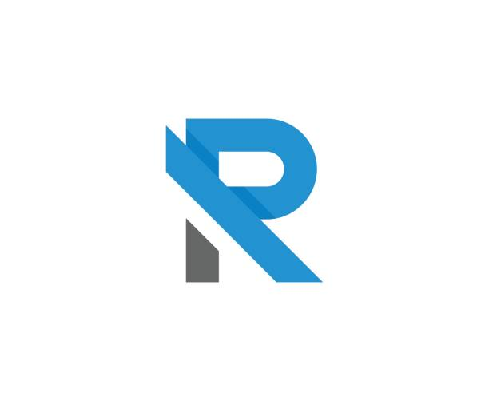

Python é uma linguagem Open-Source de propósito geral usado bastante em data science, machine learning, desenvolvimento de web, desenvolvimento de aplicativos, automação de scripts, fintechs e mais.Java é uma linguagem de programação e plataforma computacional lançada pela primeira vez pela Sun Microsystems em 1995. Existem muitas aplicações e sites que não funcionarão, a menos que você tenha o Java instalado, e mais desses são criados todos os dias. O Java é rápido, seguro e confiável.C# (CSharp) é uma linguagem de programação orientada a objetos criada pela Microsoft, faz parte da sua plataforma .Net. A companhia baseou C# na linguagem C++ e Java.

R é uma linguagem versátil, desenvolvida por dois pesquisadores do departamento de Estatística da Universidade Auckland, na Nova Zelândia. Ela surgiu a partir da necessidade de um programa que auxiliasse na manipulação, análise e visualização de dados.